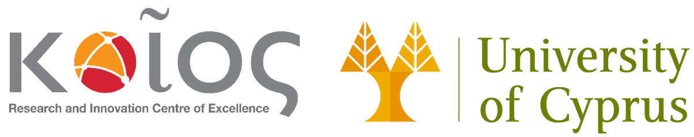
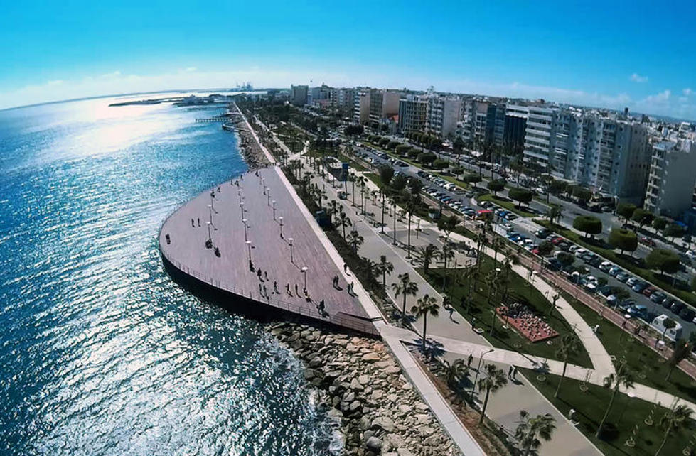
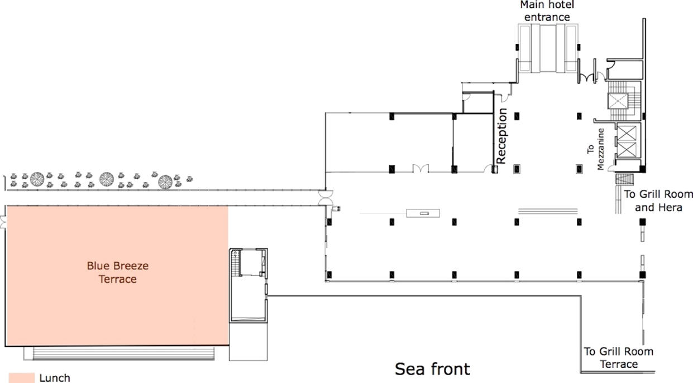
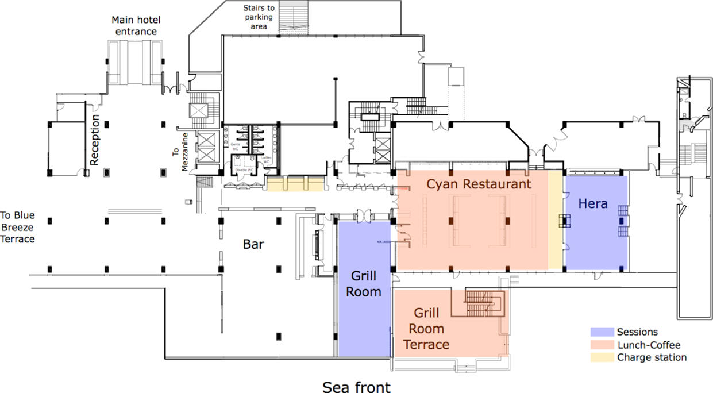
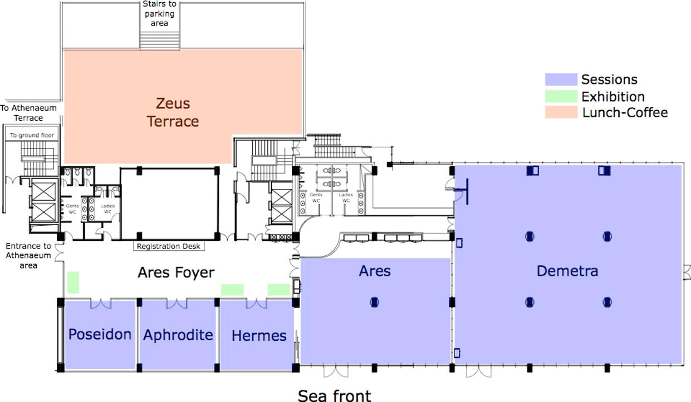
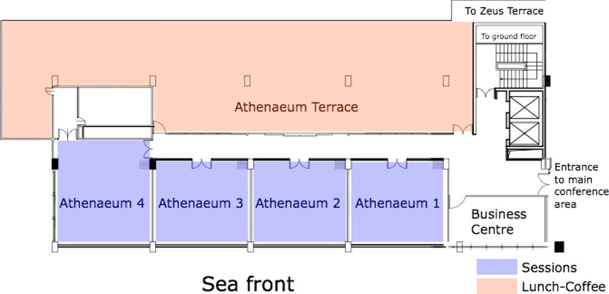

Conference Host, Venue & Maps |
The University of Cyprus – Your ECC18 Host |
|  |
|
The University of Cyprus (UCY) was established in 1989 as the first public University in Cyprus. UCY is the leading university in Cyprus, with more than 7,000 students and nearly 1,000 employees (academic and administrative), and the youngest institution to be ranked in the top 550 Higher Education Institutions in the world. Furthermore, it has been ranked the most active research institution in Cyprus (European Research Ranking). The 2018 European Control Conference is organized by the KIOS Research and Innovation Center of Excellence, which operates within the University of Cyprus. The KIOS Center of Excellence (KIOS CoE) was established in 2008 and is currently the largest research and innovation center in Cyprus on Information and Communication Technologies (ICT) with an emphasis on monitoring, control, management and security of critical infrastructures such as electric power systems, water distribution networks, telecommunication networks, and transportation systems. The goal of the Center is to conduct outstanding interdisciplinary research and innovation and produce new knowledge and tools that can be applied to solve real-life problems. The Center collaborates with an extended network of national and international academic, industrial, and governmental organizations to assure that its research has maximal applicability and impact. The KIOS CoE research team has a strong background and significant experience in the area of intelligent monitoring, control and security of critical infrastructure systems. Currently, the Center has approximately 100 researchers working on various aspects of intelligent systems and networks. The research is led by a multidisciplinary team of faculty staff from the University of Cyprus, covering a wide spectrum of expertise, including as systems and control, distributed systems and algorithms, graph theory and optimization, power systems, telecommunications, computational intelligence, fault diagnosis and fault tolerance, and embedded systems. Since its inception, the KIOS CoE has participated in more than 70 research projects. In 2017, the KIOS Center was selected by the European Commission to be upgraded to a Research and Innovation Center of Excellence, in collaboration with Imperial College London. This success was the result of a lengthy and extremely competitive process coordinated by the European Commission as part of the EU’s strategic programme “Spreading Excellence and Widening Participation – Teaming.” The aim of the Teaming programme is to bridge the gap between European countries in terms of research and innovation capabilities, by establishing world-class Centers of Excellence which can facilitate access to new scientific networks and unlock new opportunities for economic development. As part of the Teaming programme, the KIOS CoE will receive funding in excess of 40 million euros over a period of 15 years.
A Short History of Limassol Limassol is a city on the southern coast of Cyprus and is the second largest urban area in Cyprus. Limassol has been ranked by TripAdvisor as the 3rd up-and-coming destination in the world, in its Top 10 Traveler’s Choice Destinations on the Rise. Limassol was built between two ancient cities, Amathus and Kourion, and during Byzantine rule it was known as Neapolis (new town). Limassol’s historical centre is located around its medieval Limassol Castle and the Old Port. Today the city spreads along the Mediterranean coast and has extended much farther than the castle and port, with its suburbs stretching along the coast to Amathus. Limassol’s elegant old quarter focuses on a small covered produce market, surrounded by tavernas and bars, and an equally diminutive medieval castle sheltering a superb medieval museum, surrounded by a former carob-pod mill refitted as eating, drinking and exhibition venues by the Lanitis Foundation. Wander round the narrow streets of the old town radiating out from the fishing harbour. The medieval castle was the site of the royal wedding in the Middle Ages between Richard the Lionheart and Berengaria of Navarre, and now houses the Cyprus Medieval Museum. Browse through the array of goods and produce in the atmospheric Market. The town’s inhabitants are renowned for their love of fun so not surprisingly the nightlife is varied, with all sorts of tavernas, discos and clubs. Enjoy a summer concert under the stars in the Greco-Roman theatre of Kourion, or join in the Bacchian excesses at the Wine Festival in September, or have fun at the Carnival with its fancy dress chariot parade and parties. A short drive out into the surrounding countryside will take you through vineyards and quaint wine producing villages. The castle of Kolossi is where the sweet dessert wine “Commandaria”, the world’s oldest named wine, was produced by the Knights of St John of Jerusalem who had their headquarters here in the Middle Ages. |
Conference Venue: Amathus Beach Hotel Limassol |
|
75 Amathounta Avenue Set on a wonderful beach front setting, the design Amathus 5 star hotel is the ultimate leisure and business hotel in Limassol, Cyprus. Boasting some of the finest luxury rooms and suites in Limassol, elegantly appointed conference venues, abundance of recreational activities and entertainment options this luxury 5 star hotel on the beach is an enchanting corporate getaway with unrivalled business and leisure facilities. This sea view conference centre in Limassol is equipped with state of the art facilities and high end amenities that are sure to turn any corporate event or conference meeting into a successful experience. Surrounded by the azure waters of the sea this luxury seaside hotel is the perfect venue for corporate travelers seeking for a tranquil hideaway for their business trips, corporate tours, events and conference meetings in Cyprus. |
Floor Plans |
|
Ground Floor |
|
 |
|
Mezzanine |
|
 |